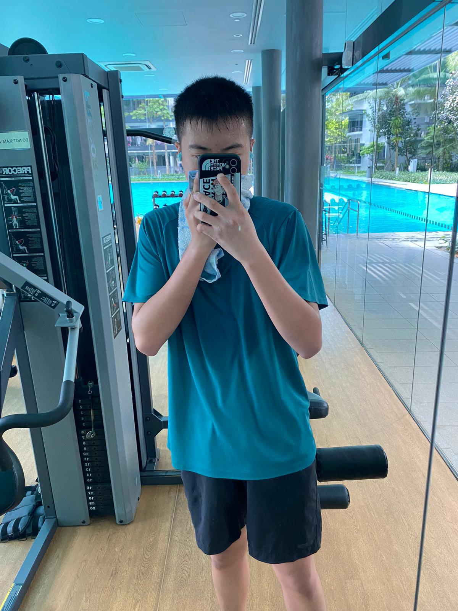
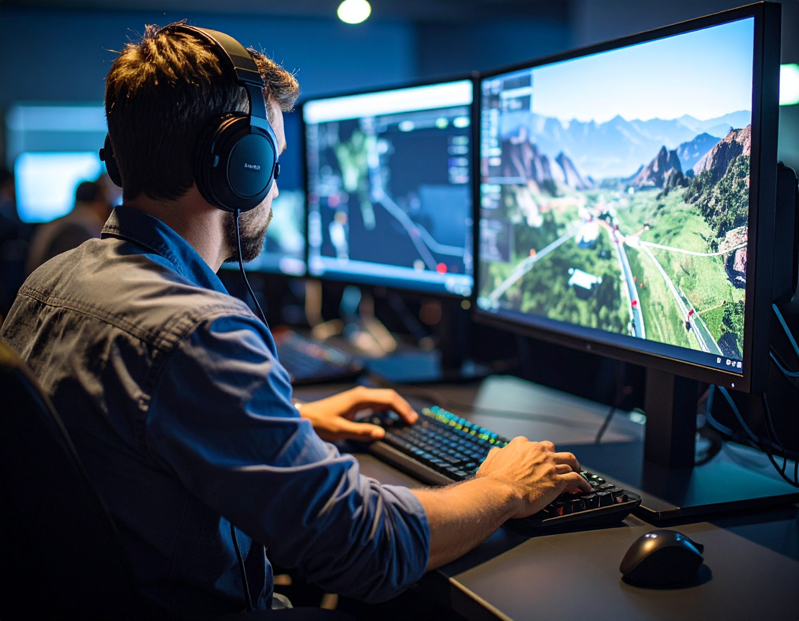

Hello, I'm Alex

🎯 My Interests
I enjoy gaming, watching anime or television shows, and exercising. On a side note, I also enjoy reading sometimes. Although not an avid reader, I do find some of the genres interesting.
🌟 My Future Aspirations
Ever since I was a child, I have dreamed of becoming a game developer. Video games have always been a big part of my life—not just as entertainment, but as something that sparked my imagination. I spent countless hours exploring different game worlds, have often find myself pondering about how they were made and how I could one day create something just as exciting as the game themselves. My goal is to develop games that people can enjoy and remember it for its uniqueness, just like the ones made by leading game studios today. I want to forge experiences that are fun, creative, and meaningful to people of all ages, and to keep learning and improving as I grow and thrive in this field.
